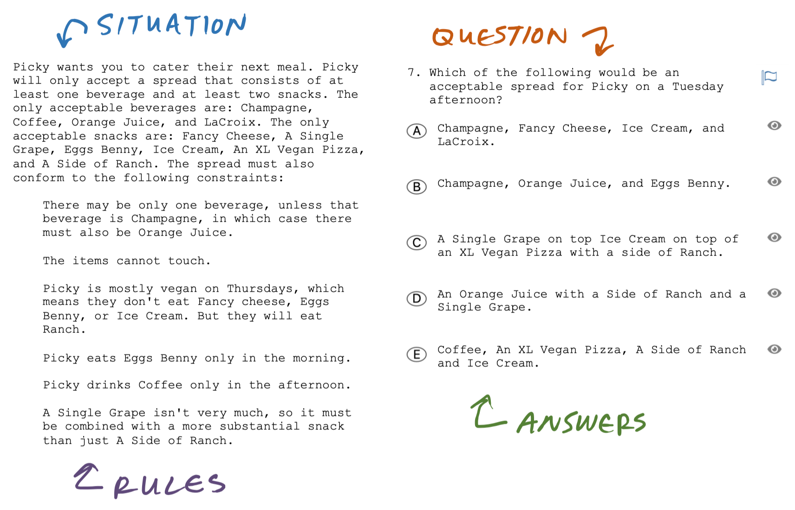

Games Overview
Terminology note
The LSAT calls this section "Analytic Reasoning." Most others call it "Logic Games" or "LG."
Each Games section contains 4 little logic puzzles.
Some people think that you have to be some kind of logic wizard to solve games. They stare at the game, hoping for magical insights to suddenly appear. They try to juggle all the variables in their head. And sometimes it works.
I believe that games primarily test your ability to methodically follow rules one-by-one. The best way to reliably succeed on games is to be a robot, not a wizard.
Games vocabulary

Each game involves a strange situation.
This situation is made up of a number of moving parts called the elements.
The elements are governed by a set of rules, which constrain where the elements can and can't go.
Generally, the elements will be either...
- ordered along a number line or
- grouped together into a few buckets.
Thus, the two primary game families are Order games and Group games.
Step 1: Draw everything you know
Your first step, in playing any game, is to draw a board. Depending on the game's type, your board will look like buckets or a number line.
In addition to the board, draw an index to track the elements.
You'll also want to find some way to visualize all of the rules, so that you don't need to re-read them as you play the game.
Note
Drawing is important because it allows you to put everything you know about the game on paper. Recording your thoughts on paper frees your brain to think about how it all fits together.
As a bonus, you might notice connections between the rules or a [split] that means the game can only go one of two (or three) ways.
Danger
Looking for splits and connections easily becomes staring and staring is the time-killer.
Step 2: Get points by proving and disproving answers
Unfortunately, you can't get points for showing your work on the LSAT. The only way to get points is to correctly answer the questions.
Make hypos
The most reliable and efficient way to evaluate the answers is to make hypotheticals, aka hypos.
A hypo is an example, it's one possible, valid arrangement of all the elements.
A complete hypo takes care of all the rules, which means in that hypo none of the rules can be broken.
Example of taking care of the rules
Consider a simplified game with 4 elements: X, Y, Z;
and 2 rules:
- X can't be first.
- Z can't be last.
If we put W last, then we have taken care of every rule.
_ _ X
- We've made sure the the first rule can't be broken. X cannot be first since we've put it in last.
- And we've made sure the second rule can't be broken, too. With X in last, there's no way for Z to end up last.
No matter how Y and Z move around, as long as X stays fixed in last, we know that we've got a valid (and flexible) hypothetical.
(Z Y) X
Prove "could" / disprove "must"
Hypos are powerful and limited tools. How you use them depends on whether the question asks what "could be" or what "must be."
| Question | Use hypos to... |
|---|---|
| Could be | select the 1 correct answer |
| Must be | eliminate the 4 wrong answers |
Using 1 hypo to solve 2 questions
Recall the valid hypo we made in the above example:
(Z Y) X
The parentheses indicate that Y and Z can freely move around, while W is fixed in last.
Now consider these two simplified questions.
- If X is last, which of the following must be true?
- Y is second
- Y is next to Z
- Which of the following could be true?
- X is before Z
- Z is second
For 1, we can eliminate answer (a). Our hypo shows Y in second, but it also shows that Y can go first. That means Y doesn't have to go second, which disproves (a). Since (b) is the only other option, we can choose it and move on, without needing to prove it.
For 2, we can select answer (b). We look at (a) and that doesn't happen in our hypo, so we move on to (b). That did happen, so we choose (b) and move on.
For most people, this approach will feel unnatural. By default, most people do not use hypos properly.
- If you think you aren't most people, try this quiz from the New York Times.
- If you think you are most people, this story about swans might help.
Timing Suggestions
At first don't worry about time. Time limits will create too much pressure when you're learning the basics. Initially, it's better to practice being methodical rather than fast.
If anything, use a count-up timer to get objective information about where you spend your time.
On test day, aim to finish the easier two games in under 15:00 total, so you have 10:00 each for the harder two.
Tip: Sprint!
The best way I've found to improve my speed on games is Sprint practice. In a sprint, I choose an easier game and try to finish in ~4:00 or less. If I fail, I try the same game (or an easier one) again.
This might seem crazy, but there's no law of physics that says games have to take 8 minutes.
Sprint practice reveals how much time I usually waste trying to figure out games, aka being a wizard. If I let my ego drive, then I spend a lot of time just staring at the game, trying to beautiful mind it.
Sprinting also reveals that I can't be purely robotic. I have to make space for insights by taking small, intentional pauses like the scan and checks.
Summary of useful Games skills and knowledge
| Primary Skills | draw games quickly, neatly, and accurately | make and use hypos |
|---|---|---|
| Needed knowledge | common game types, common rules, use indexes to capture numeric information | prove could, disprove must, major and minor question types |
| Secondary Skills | double checks and checks-for, noticing splits, noticing connections, minimum viable drawings, combining normal tools to deal with weird situations, not staring | taking care of the rules, re-using old hypos, IF before WHICH |